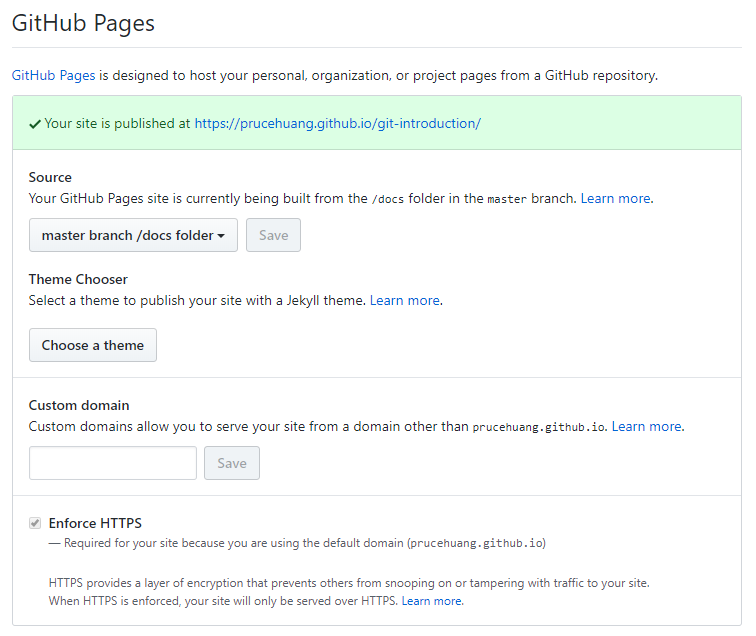

本地部署
在书籍本地目录下，直接部署，会自动生成_book文件夹，并启动4000端口的网页
$ gitbook serve
本地查看网址 http://localhost:4000/
部署到GitHub上
很多人直接将GitHub只作为代码的托管工具，其实忽略了其另外的一个非常强大的功能 —— GitHub Pages。 直接使用GitHub Pages的就已经能实现GitBook的部署了， 尤其是在gitbook.com并不总能登陆的情况下，GitHub Pages更显得重要了 部署具体步骤如下：
- 在GitHub上创建Repository
- git clone项目到本地，并创建docs目录
- 将GitBook书籍存入上一步的目录中
- 执行GitBook的编译过程
$ gitbook init $ gitbook install $ gitbook build - 将_book内的内容完全拷贝到docs中
- 增加.gitignore文件
/_book/ /node_modules/ /docs/docs/ - 上传所有的文本到GitHub服务器，进入GitHub的设置页面，选择Settings，找到GitHub Pages，打开并选择"master branch/docs folder"  保存后稍等片刻即可访问 https://prucehuang.github.io/git-introduction/
部署到GitBook上
登陆新版的gitbook.com，注册并设置关联GitHub，最新的文件提交后可以直接同步到书籍